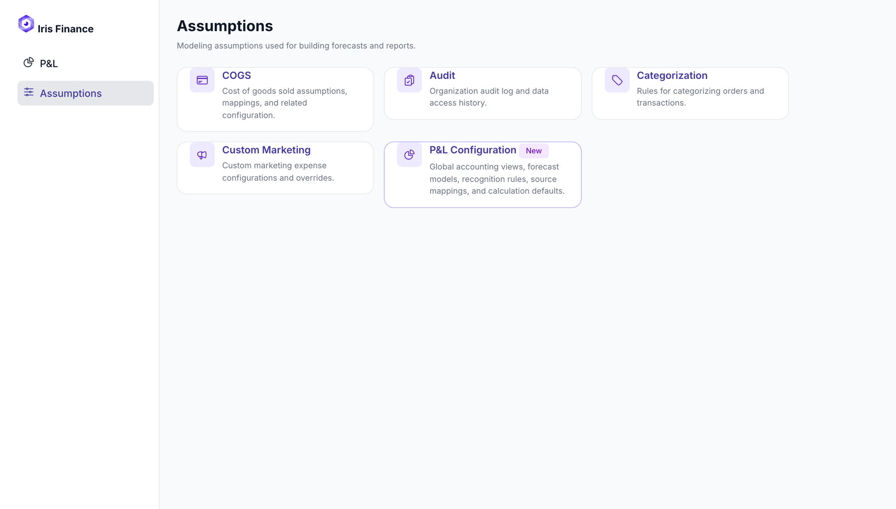

Profit & Loss: a percentage that could not be added up
Every line carried a green or red percentage and nobody could say what it compared against. Labelling it would not have helped.

Why dollars, not percent
One month, operating view, against plan. The two axes rank the same rows in opposite orders.
| Line | Variance % | Variance $ |
|---|---|---|
| Shipping Revenue | −13% | −$1K |
| Refunds | +13% | +$3K |
| Payroll | +13% | +$18K |
| Amazon Sales | −4% | −$18K |
| Gross Profit | −0.8% | −$3K |
On percentages the loudest line is a $1K shipping miss, while an $18K Amazon miss reads as rounding. And dollars add up: −$18K, +$5K, −$1K, $0 and +$3K sum to the −$12K miss on Net Sales. The percentages sum to nothing.
Three options went to the review; I recommended shipping one and holding another until the axis was confirmed.
Decisions
- The formula replaced the prose instead of joining it Three strings covered 24 rows, and the only word they added was “net”, wrong on most rows. Keeping both would have been the safe call.
- No truncation, ever A cut formula is worse than the sentence it replaced: the reader cannot tell a term was dropped. Longest is 80 characters against ~57 per line, so it wraps to two; hard cap three. Cost: 0 to +5px of row height.
- Wrote the formula as accountants read it
Costs are stored signed and the code adds them. Printing
Gross Profit = Net Sales + Total COGSto a finance team reads as a bug. - Moved the forecast control onto the column it changes It sat in the toolbar looking like a twin of “Compare to”. It now lives in the Run Rate column header.
- Edit mode went back to a button after three iterations Button, then a Viewing/Editing toggle, then an inline pencil. The property that mattered: editing must look unlike reading. One path only, no inline alternative.
- Refused to reinstate the cell drill-down that was asked for It had been removed for reasons that still held. The existing contribution list became clickable instead. Deleted the dead 55-line function so nobody re-wires it.
- Stopped the panel inventing an order count It printed orders and average order value for rows that are records, not orders. Replaced with one honest metric; the estimated channel split now says it is estimated.

Evidence
| Pair | Ratio | Outcome |
|---|---|---|
| Favourable green on white, 11px | 5.36:1 | Pass |
| Unfavourable red on white, 11px | 6.03:1 | Pass |
| Hint purple on white, 10px | 3.76:1 | Fail → 9.19:1 |
| Placeholder grey, 11px | 2.54:1 | Fail → darkened |
| Segmented control, inactive | 4.23:1 | Fail → 6.61:1 |
| Secondary text on subtotal ground | 4.39:1 | Raised as a token question |
| What | Result |
|---|---|
| Formula output, 3 views × 5 channel sets × 12 months | 1,080 assertions, 0 failures |
| QA regression, 20-step flow | Console clean; 1 defect — Discard wiped saved overrides |
| Detail panel content height | 1,282px → 1,087px (−15%); visible 54% → 64% |
| Methodology block | Was 167px below the fold; now above it |
Out of scope, named
Daily and weekly granularity, geography and product filters, a real backend, reconciliation detail. Seven rows stayed open questions rather than closed with a guess — including whether published periods should recalculate. My answer was no.
What I would change
The narrow-screen panel still differs from the production build. Closing it needs a reference screenshot I did not have; the previous attempt without one made it worse.
Open the prototype → Comparison modes, edit mode, the formula panel, the assumptions page.